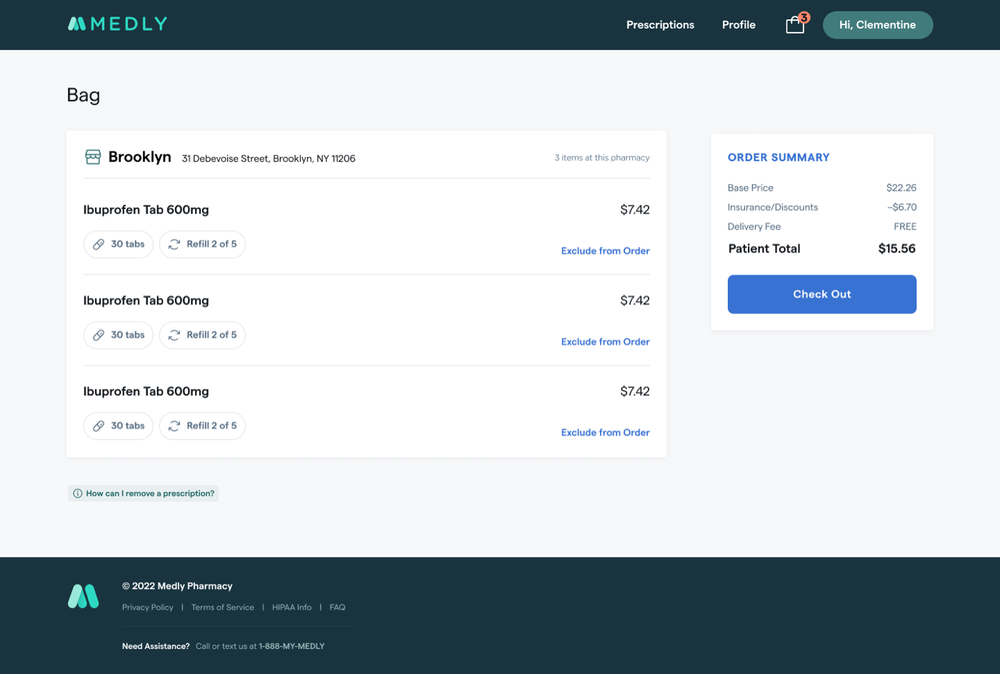
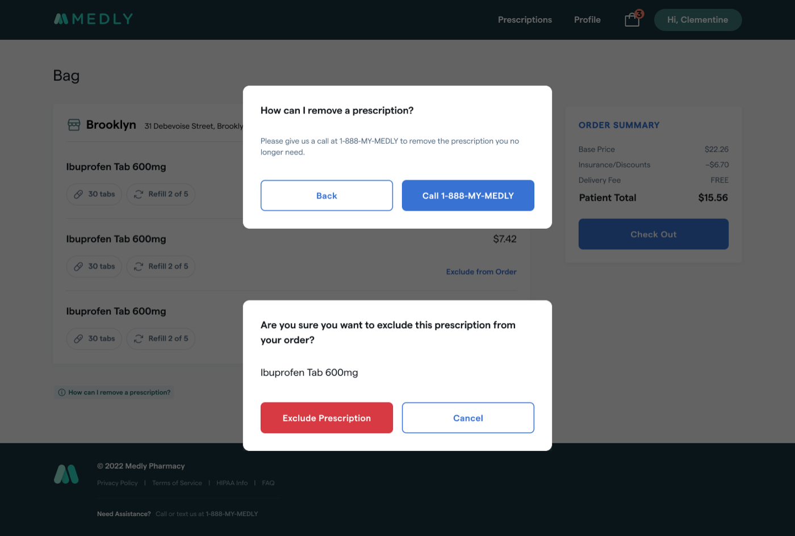
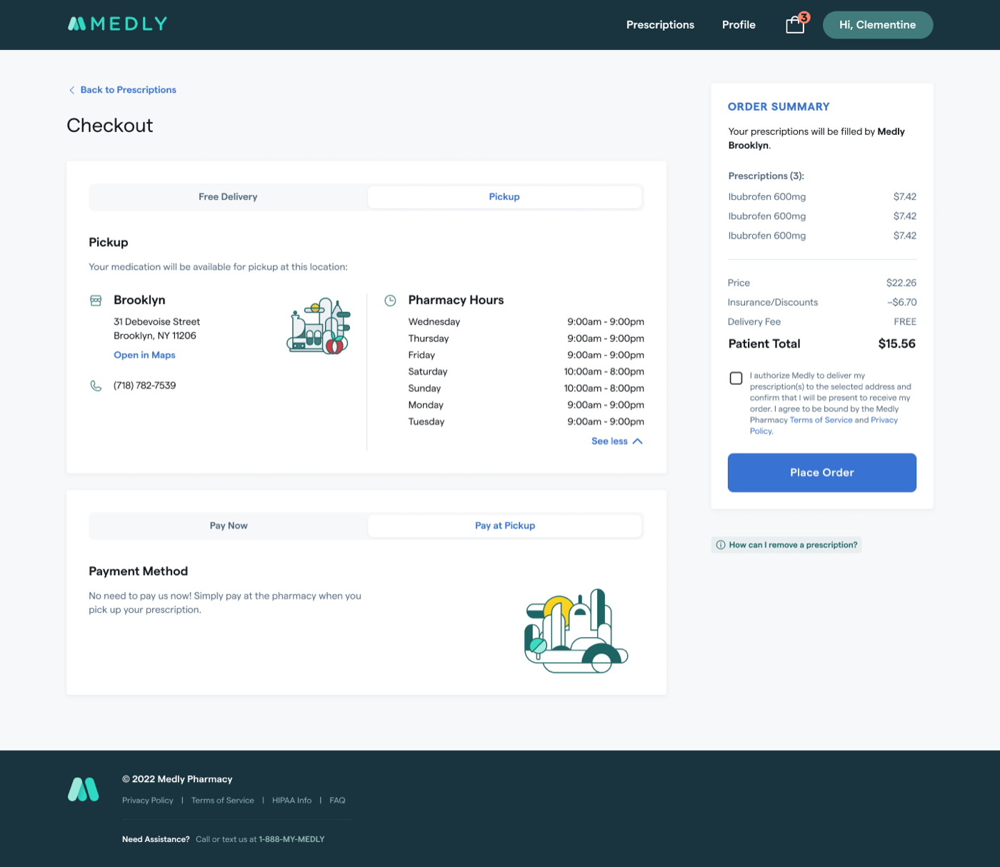
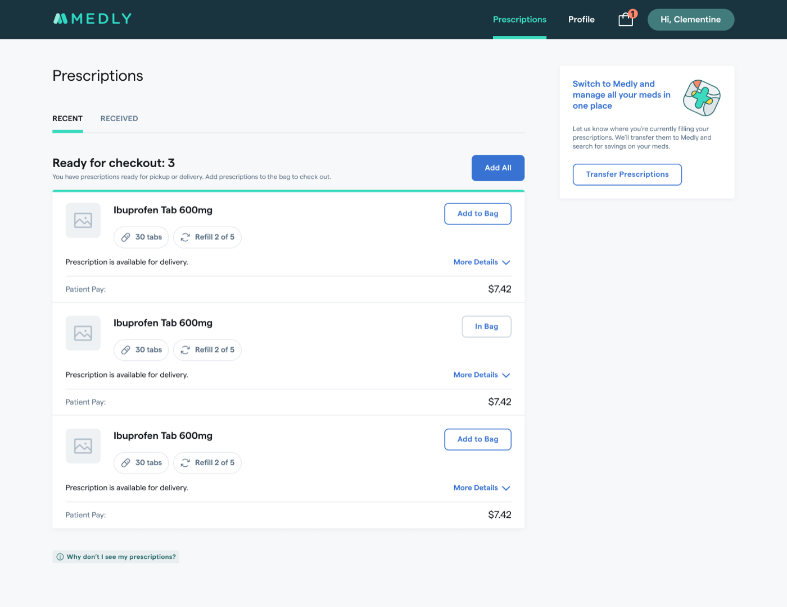

Prescription Checkout & Delivery

Medly is a digital pharmacy that delivers medications and manages prescriptions for patients who previously had to call in every order. I led design on a self-serve checkout that let patients see what was ready to fill, choose what to pay for, and schedule delivery, without an agent on the phone.
Objectives: let patients self-serve prescription selection and flexible delivery scheduling (with in-store pickup as an option), and free agent time for higher-value patient support.
The original plan routed checkout out to a separate, text-based mobile web app. Partway through, engineering discovered the two systems couldn't sync patient data, which would have forced patients to re-enter information they'd already given us in the middle of checkout.
That left a choice. We could hit the original date with a launch that had no checkout at all, where patients could update their profile and view their prescriptions but still had to call an agent to order anything. Or we could delay and build the full checkout natively.
I pushed for the delay. The whole point of the product was to get scheduling off the phone, and shipping a version that still required a call would have taught patients the app couldn't do the thing they needed it for. We moved the date, built checkout natively, and phased lower-priority pieces to protect the new timeline.
I ran a competitive analysis of pharmacy checkout flows, extended the existing component library rather than building from scratch, and prototyped the flow (view the prototype) for moderated usability interviews, recruiting real patients over Google Meet to walk through checking out live prescriptions.





The project cycled through three product managers in a year. I was the constant, which meant design ownership expanded into keeping the work coherent across handoffs.
When a new PM joined, I walked the backlog with her to reconcile what had been specced against what the product actually needed, and flagged the features that had no tickets at all. We wrote requirements together from there.
The team had also never estimated work. I introduced sizing so we could forecast when phases would land, and proposed sizing well-documented front-end tickets asynchronously in Slack to keep it from becoming another meeting. Both stuck.
Alongside that, I coordinated with the iOS team so the web checkout and the app stayed aligned.
Patients moved through the flow smoothly overall: “Good. Like checking out on Amazon.” and “Pretty straightforward and easy” were typical reactions. But two specific points of friction showed up consistently:



Many patients still preferred walking to their pharmacy in person. The new flow was additive to that relationship, not a replacement for it, and that nuance shaped how we talked about the feature internally.
Testing also surfaced the post-launch roadmap patients asked for directly: order cancellation and rescheduling, default payment methods, and richer delivery notifications.